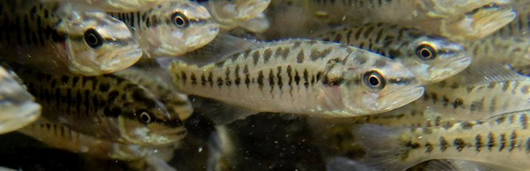
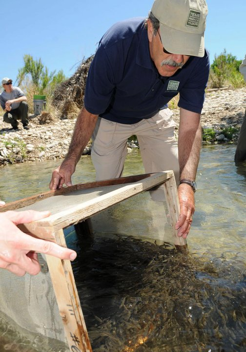

Guadalupe Bass Restoration Initiative
Guadalupe Bass Restoration Initiative in the Llano River watershed

The National Fish and Wildlife Foundation has begun an initiative to focus and coordinate actions to conserve rare species of black basses in the United States. Although the initiative plans to address all species of endemic black bass in the southeast, the first project will address the State Fish of Texas, Guadalupe bass. This initiative will be coordinated by the Texas Parks & Wildlife Department and one of the initial focal areas will be the South Llano River.
The Guadalupe bass (
Micropterus treculii
) is a Central Texas endemic, naturally occurring only in streams draining the Edwards Plateau region (San Antonio, Guadalupe, Colorado and Brazos river systems). In 1989, it was designated the State Fish of Texas by the Texas Legislature, in recognition of the unique character of both the Guadalupe bass and its habitat. Guadalupe bass has long provided a popular sport fishery in the Edwards Plateau region of Texas. The angling experience is not about quantity, it’s about the quality of a fishing trip for an agile, fast-water fish occurring in an attractive, natural setting.
Guadalupe bass numbers have decreased over recent decades and for that reason the Guadalupe Bass Restoration Initiative was developed to reverse the trend. The decline in abundance is due to a combination of factors, including decreased stream flow, habitat degradation and hybridization with smallmouth bass (
M. dolomieu
). Habitat loss and genetic contamination problems are pervasive throughout the range of Guadalupe bass. Stream flow declines and a decrease in habitat quality are due mainly to human cultural activities and population growth, and thus are likely to continue.
Interspecific hybridization became a threat to Guadalupe bass survival when the non-native smallmouth bass was introduced, beginning in 1974. The Texas Parks and Wildlife Department initiated an intensive smallmouth bass stocking program in the Edwards Plateau region with the objective of increasing angler harvest in Central Texas streams and reservoirs. An unforeseen result of the stocking program was hybridization between these species. A genetic survey of Guadalupe bass in 1989 showed extensive, hybridization with smallmouth bass in almost every Guadalupe bass stream system. An assessment of the current status is now underway. Preliminary results show only the Pedernales River with a pure population of Guadalupe bass.
Although TPWD has a policy of no longer stocking smallmouth bass in the Hill Country, the hybrids are still problematic. Since 1992, TPWD has been evaluating a stocking program whereby pure Guadalupe bass are introduced into a genetically contaminated stream system (headwaters of the Guadalupe River) in order to numerically and reproductively overwhelm the hybrid swarm. Although total eradication of the smallmouth bass genome is improbable in some of the more contaminated stream systems, if the smallmouth bass genetic influence could be reduced to low levels (1%), genetic restoration would be considered successful.
As part of the TPWD Guadalupe Bass Restoration Initiative, restoration efforts will focus on Guadalupe bass populations in the north and south forks of the Llano River. This project provides the opportunity to use interest in the State Fish of Texas to raise awareness of habitat quality and support restoration and conservation efforts in the region. Specific restoration activities will include assessments of fish community structure and habitat use, removal of non-native smallmouth bass and hybrids, stocking of genetically-pure Guadalupe bass, genetic monitoring of Guadalupe bass populations, instream and riparian habitat assessments, and instream, riparian and upland restoration and conservation.
The intent of the Guadalupe Bass Restoration Initiative is to protect Guadalupe bass populations and their habitat by developing networks of willing landowners interested in implementing coordinated landscape conservation actions at watershed-scales. Conservation actions implemented by landowner networks will promote functional riparian and stream systems, and emphasize the conservation of native fish communities and supporting habitats. The networks will attempt to reduce or eliminate activities on the landscape that degrade water quality, reduce water quantity, degrade riparian systems, favor non-native species, or fragment stream systems, while encouraging a wide array of sustainable land-use activities that are compatible with aquatic resource conservation.
 Texas Parks and Wildlife stocking Guadalupe bass into the South Llano River, 2011.
Component 1 – Protect and maintain intact, healthy habitats
Despite recent increases in human populations throughout the native range of Guadalupe bass, many stream segments remain relatively pristine and intact. However, projections of population growth, water demands, and land-use changes indicate that these locations will soon be at risk. The human population on the Edwards Plateau is predicted to increase by approximately 25% by 2020, with some subsets of the region expected to double in population size. The associated demands placed upon these ecosystems will have direct effects on the health of Guadalupe bass populations.
To address projected changes in water demands and land uses, a Watershed Conservation Plan is needed for the headwaters region of the Llano River. The Plan will be developed by the South Llano Watershed Alliance, assisted by a technical team of TPWD biologists and other experts working in collaboration with other interested stakeholders (e.g., private landowners, local governments, state and federal agencies, conservation NGOs, local angler organizations, etc.). TPWD will help coordinate the implementation of this Plan with a focus on working through partnerships to protect and maintain aquatic, riparian and upland habitats essential to the long-term health and sustainability of this ecosystem.
Component 2 – Restore degraded habitats
Habitats important to the health of Guadalupe bass populations will be restored to a naturally functioning condition. Habitat restoration actions will enhance all life history stages of Guadalupe bass, supporting reproduction, survival and maintenance of populations at carrying capacity. In addition, restoration of habitat will benefit all other aquatic species.
Partners
- Southeast Aquatic Resources Partnership
- Texas Parks and Wildlife Department
- South Llano Watershed Alliance
- National Fish and Wildlife Foundation
- Texas Parks and Wildlife Foundation
- US Fish and Wildlife Service
- The Nature Conservancy
- Texas State University
- Texas Tech University at Junction
- BASS
- FLW Outdoors
- KT Diaries
- World Fishing Network
- Trout Unlimited
- City of Junction
- USDA NRCS